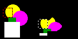
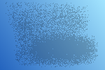
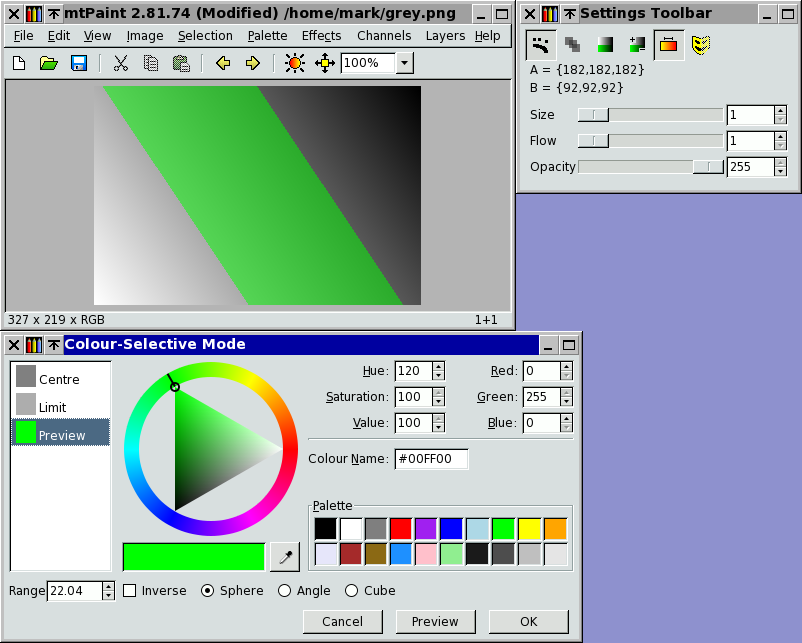
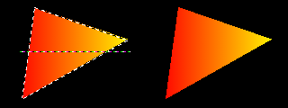

Pixelová kresba je hlavní úkol, pro který byl mtPaint navr¾en. Tato forma kresby je v podstatì velmi jednoduchá a podobná malování v reálném svìtì. Máte napøíklad plátno na které kreslíte, ¹tìtec se kterým malujete a paletu barev do kterých ¹tìtec namáèíte.
Zde je ukázka, jak vypadá hlavní okno mtPaintu:
Li¹ty nástrojù nahoøe a paleta nalevo mohou být skryty a opìt zobrazeny pomocí kláves F5-F8 dle va¹ich po¾adavkù k práci.
První rozhodnutí, které musíte udìlat pøed zapoèetím projektu je s jakým typem plátna budete pracovat. mtPaint podporuje dva typy plátna:
Obrázky s indexovanou paletou pou¾ívají 2 a¾ 256 barev. Ka¾dá z tìchto barev mù¾e být nastavena u¾ivatelem a je ulo¾ena spoleènì s plátnem do obrázku. RGB obrázky neukládají paletu, ale mají výhodu v pou¾ití mnoho milionù barev v obrázku. Pro ve¹keré práce související s digitálními fotografiemi musíte pou¾ít RGB plátno.
Po spu¹tìní mtPaintu máte automaticky prázdné plátno se stejnými rozmìry jako pøi pøedchozí práci. Pokud chcete nìco jiného, musíte vytvoøit nový obrázek, který lze zavolat pomocí Ctrl-N, pou¾itím menu Soubor, nebo stiskem ikony Nový obrázek.
mtPaint má mnoho rùzných nástrojù na malování, které mù¾ete pou¾ít. Zaènìte kliknutím na pøíslu¹nou ikonu v sekci Nástroje nástrojové li¹ty v horní èásti okna mtPaintu.
Kdykoliv udìláte chybu, mù¾ete v¾dy pou¾ít funkci Zpìt a Vpøed pøes klávesy Ctrl-Z a Ctrl-R, pøes menu Upravit, nebo ikony na hlavním panelu. Pamì» umo¾òuje vrátit a¾ 100 zmìn. Maximální limit pamìti pro zpìtné akce mù¾ete nastavit v oknì voleb.
Nástroj Malování je nejjednodu¹¹í kreslicí nástroj. Nejsna¾¹í cesta pro jeho pou¾ití je vybrat jeden z pøeddefinovaných ¹tìtcù stiskem F3, nebo kliknutím do oblasti s ukázkou ¹tìtce nad paletou. Dostanete na výbìr rùzné tvary a velikosti ¹tìtcù:

Pokud chcete manuálnì upravit velikost ¹tìtce, nebo bohatost spreje, mù¾ete to udìlat na li¹tì nastavení.
Nástroj Pøeházení prohodí náhodné pixely v oblasti ¹tìtce. Hodí se to pro mixování mezi dvìma bloky barev na plátnì a vytvoøení pixelované textury jako tato:
Velikost nástroje a bohatost ovlivní, jak prohazování pracuje na plátnì.
Nástroj Vyplnìní pracuje tak, ¾e vyplní oblast, kde mají pixely stejnou barvu. Pokud na ikonu Vyplnìní kliknete pravým tlaèítkem, tak máte více mo¾ností nad vyplnováním.
Nastavením 'Kanálem obrázku' mù¾ete oblast vyplnit v po¾adovaném kanále pou¾itím kanálu obrázku jako odkazu pro vyplòovací plochu.
'Fuzzy' re¾im se pou¾ije nastavením èísla vìt¹ího ne¾ 0. Tento re¾im umo¾òuje vyplnit oblast pixelù, které jsou podobné tomu, na který jste klikli poprvé radìji ne¾ pixely, které jsou identické, co¾ se hodí pro fotografie.
Pøepínaè 'RGB krychle' zajistí ve fuzzy re¾imu pou¾ití modelu RGB krychle narozdíl od výchozího L*X*N* koule, který se mù¾e hodit v nìkterých situacích (pro více detailù ohlednì rozdílu mezi metodami krychle a koule se podívejte do kapitoly 3.5.4). Pøepínaè 'Gradientem' ve fuzzy re¾imu bude brát v úvahu rozdíl mezi sousedními pixely radìji, ne¾ originální pixel a ka¾dý a ka¾dý dal¹í kandidát.
Rovnou èáru mù¾ete v mtPaintu nakreslit jednodu¹e takto:
Kreslení èáry bude pokraèovat, dokud nestisknete pravé tlaèítko, nebo klávesu Escape. Tlou¹»ka èáry je dána nastavením její velikosti.
Nástroj Rovná èára mù¾e také nakreslit vrchol ¹ipky na konci aktuální èáry, pokud stisknete klávesy 'A', nebo 'S' pro otevøenou, nebo uzavøenou ¹ipku. Velikost hlavy ¹ipky se nastavuje bohatostí.
Nástroj rozmazání je k dispozici pouze pokud pracujete v RGB re¾imu. Pracuje rozmazáním oblasti pixelù nastavenou velikostí. Ta¾ením kurzoru v rùzných smìrech dosáhnete rùzného rozmazacího efektu. Zde je jeden pøíklad rozmazání:

Tohoto efektu je dosa¾eno se zapnutým spojitým re¾imem a vypnutým re¾imem neprùsvitnosti.
Nástroj klonování se pou¾ívá pro kopírování kusù z jedné èásti obrázku do jiné. Po vybrání nástroje Klonovat musíte nastavit jeho velikost a potom pøesunout kurzor my¹i nad oblast plátna. Potom stisknete Ctrl a pøesunete my¹ pro upøesnìní pozice ohranièení (èernobílá) dál od klonovacího ohranièení (èernoèervená). Po uvolnìní Ctrl mù¾ete stisknout levé tlaèítko pro kopírování pixelù z èervenoèerné oblasti do èernobílého boxu. Zde je pøíklad:

Pokud chcete na plátno vlo¾it nìjaký text, tak stiknìte klávesu 'T', nebo kliknìte na ikonu textového nástroje na li¹tì. Následnì se vám uká¾e formuláø, kde musíte napsat text, který chcete vlo¾it na plátno. Budete moci zmìnit typ fontu a jeho velikost.
Pokud pou¾íváte GTK+2 a upravujete RGB obrázek, máte také mo¾nost mít vyhlazený text s jemnìj¹ími hranami. U¾ivatelé GTK+2.6 mají luxus rotace textu pod libovolným úhlem.
A¾ budete spokojeni s textem v oblasti náhledu budete následnì mít mo¾nost vzít text a umístit ho na libovolné místo. Následnì mù¾ete zmìnit barvu textu kliknutím na pøíslu¹nou polo¾ku palety, nebo mù¾ete také zmìnit vzorek. Text mù¾ete otáèet pod úhlem 90 stupòù kdykoliv kliknutím na ikony rotace výbìru na nástrojové li¹tì, nebo pou¾itím menu Výbìr. Umístìní textu na plátno potvrdíte stejnì, jako to dìláte u normálních operací vlo¾ení jednodu¹e pravým tlaèítkem, nebo klávesou Enter.
Paleta je umístìna na levé stranì okna mtPaintu a je pou¾ívána pro výbìr barev pro kreslení. Pokud kliknete na barvu levým tlaèítkem, tak ji vyberete pro barvu A a pokud pravým, tak vyberete barvu B. Barvy A a B jsou zobrazeny v malé oblasti nad paletou. Barvy A a B mù¾ete prohodit stiskutím klávesy 'X'.
Upravit barvy A a B mù¾ete stisknutím Ctrl-E, nebo kliknutím na náhled A/B barev. Celou paletu upravíte stiskem kláves Ctrl-W.
Aktuální paletu mù¾ete ulo¾it, nebo otevøít vyvoláním pøíslu¹né funkce v menu Paleta. Pokud ulo¾íte paletu do souboru mtpaint.gpl ve va¹em domovském adresáøi (jako /home/user/ v GNU/Linuxu, nebo C:/Documents and Settings/user/ in Windows XP) tak se stane výchozí paletou pøi dal¹ím spu¹tìní mtPaintu.
Celou paletu je mo¾né setøídit pou¾itím volby v menu Paleta. Mù¾ete také pøesunout jednu barvu v paletì z jednoho indexu na jiný a to následovnì:
Pokud to provádíte s indexovanou paletou, budou barvy na plátnì pøíslu¹nì zmìnìny.
V¹eobecné zmìny barev palety mù¾ete dìlat, pokud upravujete RGB obrázek, stiskem klávesy 'Insert' a zmìnou nastavení sady nástrojù.
Existuje zde funkce ochranné masky, která zabrání tomu, aby byla urèitá barva na plátnì pøekreslena. To se velmi èasto hodí, pokud máte nakreslený obrys a následnì chcete dokreslit zbytek mezi tìmito èárami ostatními barvami bez po¹kození obrysu. Pro ochranu barvy pøed jejím pøekreslením jednodu¹e kliknìte napravo od této barvy v oknì palety. Mìl by se tam objevit køí¾. Pøi dal¹ím kliknutí bude maska odstranìna a barva mù¾e být zase pøekreslována jako normálnì. V menu Paleta najdete také funkci pro nastavení a zru¹ení masky v¹ech barev. Tato ochrana se vztahuje na v¹echny základní nástroje, jako normální kreslení a vkládání (RGB a indexované obrázky) a také globální funkce jako efekty a barevné transformace.
Pøi úpravì nìkterých typù souborù, jako XPM, GIF, nebo PNG si mù¾ete pøát nastavit konkrétní barvu jako transparentní. Provedete to stiskem Ctrl-P pro okno voleb a následnì v sekci Soubory nastavíte index prùhlednosti. Nastavení -1 prùhlednost vypne. Máte také mo¾nost toto nastavit pøi ukládání pomocí volby 'Ulo¾it jako'.
Pokud malujete, tak se vám nìkdy hodí vybrat barvu z plátna místo z paleta pro barvy A a B. Udìláte to podr¾ením klávesy Ctrl a stisknutím levého tlaèítka pro barvu A, nebo tlaèítka pravého pro barvu B.
Pokud upravujete celou paletu, mù¾ete vybrat barvu odkudkoliv z obrazovky stisknutím ikony kapátka (jen GTK+2).
Pøi malování se obvykle pou¾ívají samostatné barvy, ale je také mo¾né pou¾ít rùzné vzorky. Pro výbìr rùzných vzorkù stisknìte F2, nebo kliknìte do oblasti náhledu vzorku tìsnì nad paletou. Následnì se vám otevøe výbìr následujících vzorkù, ze kterých si mù¾ete vybrat:

Kreslicí re¾imy mohou být pou¾ity pro zmìnu základního chování kreslicích akcí. Tyto re¾imy se zapínají a vypínají pou¾itím ikon na li¹tì nastavení, jako zde:

Ne v¹echny re¾imy jsou aplikovatelné na v¹echny nástroje. Zde je detailní tabulka ukazující, které re¾imy ovlivní jaký nástroj:
| Malování | Pøeházení | Vyplnìní | Rozmazat | Klonovat | Vlo¾it | |
| Spojitý | Ano | Ano | ||||
| Neprùsvitnost | Ano | Ano | Ano | Ano | ||
| Kolorování | Ano | Ano | Ano | |||
| Maska | Ano | Ano | Ano | Ano | Ano | Ano |
| Gradient | Ano | Ano |
Malování obsahuje ¹tìtce, spreje, rovné èáry, výbìry vyplnìné a obrysové.
Pokud je zapnutý spojitý re¾im, tak pokud budete dr¾et tlaèítko my¹i nad plátnem, budou mezery mezi pøesuny vyplnìny.
Pokud kreslíte s neprùsvitností men¹í ne¾ 255 a zpìtný re¾im neprùsvitnosti je aktivován, tak malování zmìní ka¾dý pixel dle této hodnoty pøesnì stejným zpùsobem, jako na tomto pøíkladì:

Pokud je re¾im neprùsvitnosti vypnutý, bude neprùsvitnost zvìt¹ena poka¾dé, pokud pøemalujete pixel, jako v tomto pøípadì:

Pokud je zapnutý re¾im kolorování bìhem editace RGB obrázku, tak místo nahrazení barvou operace zvìt¹í, nebo zmen¹í individuální barevný kanál relativnì k barvì A a B. S indexovaným obrázkem to bude index, který se zvý¹í, nebo sní¾í. Pro výplòové operace s výbìrem musíte také nastavit pøepínaè Kolorování +- pro urèení, kterým smìrem bude kolorování provedeno. Zde je pøíklad kolorování s modrou elipsou na ¹edivém obrázku:

Re¾im výbìru barvy je speciální typ masky, který upravuje kreslicí operace vzhledem k barvì pixelù na plátnì. Nastavení re¾imu provedete kliknutím pravým tlaèítkem na ikonu pøepínaèe re¾imu, naèe¾ se vyvolá následující okno:

Obrázek ukazuje plynulý ¹edivý pøechod z jednoho rohu do druhého a výbìr barev, který slo¾í pro støední sekci této ¹edi. Zelená oblast náhledu zobrazuje pixely chránìné pøed kreslicí operací. Za¹krtnutím volby 'Inverze' zvolíte, které pixely budou k dispozici pro kreslení.
Volba Koule je L*X*N* koule (stejná jako fuzzy výplnì) a pou¾ívá Euklidovské rozmìry v percepèním jednotném barevném prostoru, který lépe se lépe hodí pro lidské oko. Nicménì pou¾ívá slo¾ité výpoèty a jeho pou¾ití mù¾e zdr¾ovat. Volba Krychle pou¾ívá nejvìt¹í rozdíl mezi Èervenou, Zelenou a Modrou komponentou barvy, tak¾e je rychlej¹í, ale ménì rozli¹ující a mù¾e být nejlépe pou¾itelná, øeknìme pro oblasti se stejnou barvou ignorující ¹um v ni¾¹ích bitech RGB barev, nebo pøi vyplòování oblastí tak velkých, ¾e výchozí re¾im by byl pøíli¹ pomalý.
Pøepínaè Vypnout v¹echny masky se pou¾ívá pro doèasné vypnutí aktuálních masek. To ovlivní kanál masek, jakékoliv barvy v paletì, které jsou chránìné a také masku výbìru barev.
When you select the gradient mode by clicking the horizontal gradient button, you are able to paint smooth graduated areas of pixels onto the canvas. By default the gradient uses colour A and B, although you can define your own colours, which is explained later. Once the mode is switched on, there are two ways to use it:
Gradient vlo¾íte výbìrem nástroje Vlo¾it gradient z li¹ty nástrojù a následnì zadáte poèáteèní a koncový bod kliknutím my¹i. Jakmile to provedete, uvidíte náhled výsledného pøechodu a následnì musíte vybrat kreslící nástroj a nakreslíte ho na plátno. Pokud chcete gradient nakonfigurovat, musíte stisknout pravé tlaèítko na ikonì vlo¾ení gradientu na li¹tì. Zde je pøíklad jednoduchého lineárního gradientu z èervené do ¾luté kreslené pomocí nástroje polygon pro vytvoøení trianglu. Levá èást obrázku zobrazuje konstrukci èar pro nástroj vlo¾ení gradientu a nástroj polygon a pravá èást reprezentuje pøesné pixely na plátnì:

Pou¾itím rùzných nastavení v oknì nastavení gradientu mù¾ete dosáhnout mnoha druhù efektù. Napøíklad zde je duha, kterou jsem nakreslil:

Tento obrázek byl vytvoøen podle následujícího postupu po spu¹tìní mtPaintu:
Aby tahové gradienty fungovaly, musíte nejprve vyèistit jakoukoliv èáru gradientu umístìnou na plátno pou¾itím escape, nebo pravého tlaèítka my¹i se zapnutým nástrojem Vlo¾ení gradientu. Následnì musíte nastavit tah stisknutím pravého tlaèítka my¹i na nástroji vlo¾ení gradientu na li¹tì. Jako pøíklad, èeho mù¾ete dosáhnout se podívejte, co bylo vytvoøeno pou¾itím èerveného pøechodu do bílé s délkou 50 a zrcadlovým typem roz¹íøení:

Zde je pøíklad s podobným nastavením, ale s typem roz¹íøení '®ádné' a men¹ím ¹tìtcem:

Pokud chcete vytvoøit pøechod, nebo prùhlednost sestavenou z více bodù, tak musíte vybrat typ gradientu 'Vlastní' a následnì kliknout na tlaèítko 'Upravit Vlastní'. Potom mù¾ete nadefinovat a¾ 256 bodù na pøechod, které budou vlo¾eny prùmìrnì daleko od sebe. Zde je pøíklad jednoduchého vlastního gradientu:

Zde jsou kroky, které jsem uèinil pro vytvoøení tohoto obrázku:
Je mo¾né nakreslit pøechody do rùzných kanálù pou¾itím stejných metod jako na kanál obrázku. Napøíklad, zde je obrázek s gradientem nakresleném na alfa-kanálu:

Zde jsou kroky, které jsem uèinil pro vytvoøení tohoto obrázku: